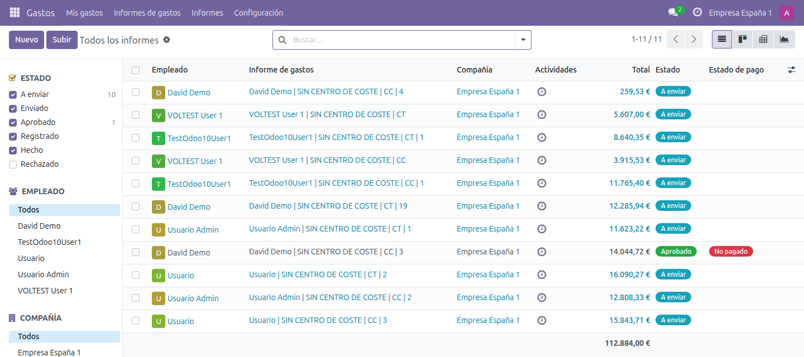
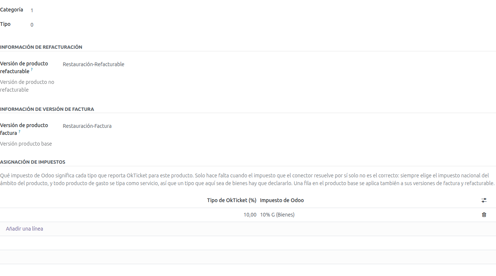
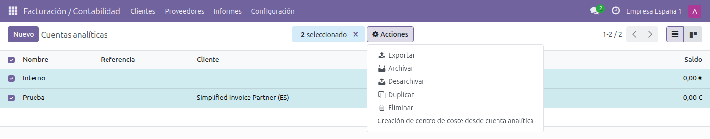

Manual de usuario
Conector OkTicket para Odoo 17
Qué hace el conector en tu día a día y dónde encontrar cada cosa en Odoo.
Manual de usuario
Qué hace el conector en tu día a día y dónde encontrar cada cosa en Odoo.
El conector trae a Odoo, de forma automática, los gastos que registras con la aplicación de OkTicket. No tienes que introducir nada a mano: fotografías el ticket con el móvil y, en la siguiente sincronización, el gasto aparece en Odoo con su importe, su fecha, su categoría, tu nombre como empleado y la imagen del recibo adjunta.
Además mantiene alineados los catálogos entre ambos sistemas:
Nota La sincronización es programada, normalmente cada dos horas. Si acabas de subir un ticket y todavía no lo ves en Odoo, lo más probable es que aún no haya pasado la siguiente ejecución.
| Paso | Qué ocurre | |
|---|---|---|
| 1 | Móvil | Fotografías el ticket en la app de OkTicket y completas los datos. |
| 2 | OkTicket | El ticket queda registrado y, si procede, revisado. |
| 3 | Sincronización | Odoo consulta la API y trae los gastos nuevos o modificados. |
| 4 | Odoo | El gasto aparece y se agrupa en una hoja de gasto en estado Borrador, listo para tramitar. |
Los gastos viven en la aplicación Gastos de Odoo. Cada empleado ve los suyos en Mis gastos; quien tenga permisos de responsable o de contabilidad puede ver los de toda la compañía.
Consejo Los gastos importados llegan en estado Borrador. Algunas vistas de Odoo traen por defecto un filtro que solo muestra los gastos ya tramitados: si la lista te aparece vacía, quita el filtro del buscador y volverán a salir.

La columna Descripción muestra la referencia del ticket en OkTicket, lo que facilita localizar un gasto concreto si te lo reclaman por su número.
Al abrir un gasto verás los campos habituales de Odoo —categoría, importe, impuestos, empleado, quién lo paga— y, además, los datos que añade el conector con la información de OkTicket, junto a la imagen del recibo. En modo desarrollador, la pestaña Okticket Response muestra la respuesta completa de la API para ese gasto.

| Campo | Qué significa |
|---|---|
| Id de Okticket | Identificador del gasto en OkTicket. Es la referencia que hay que dar al soporte si algo no cuadra. |
| Estado | Estado del gasto en OkTicket (por ejemplo Confirmado). Es informativo. |
| Es factura | Marcado cuando el documento es una factura y no un simple ticket. |
| Modo de pago | Cómo se pagó según la app: tarjeta, efectivo, etc. |
| NIF y Nombre del contacto | Datos del establecimiento leídos del recibo, cuando la app ha podido extraerlos. |
| Hoja de Gastos | Informe al que pertenece el gasto en OkTicket, que el conector usa para agruparlo en su hoja de gasto de Odoo. |
El conector adjunta al gasto la fotografía del recibo, que puedes ver directamente en el panel derecho de la ficha. Cuando el documento es una factura enviada al robot de OkTicket, adjunta también el PDF original.
Ambos quedan registrados en el historial con un mensaje del sistema, de modo que siempre se sabe qué llegó y cuándo. Los documentos no se duplican: si la sincronización vuelve a pasar sobre el mismo gasto, no se adjuntan de nuevo.
Los gastos importados no quedan sueltos: el conector los agrupa en hojas de gasto. Cómo se agrupan (por cuenta analítica, por semana, por mes…) lo decide la configuración de tu compañía; el resultado es que encuentras tus tickets ya reunidos en hojas listas para tramitar.

El estado de la hoja se mantiene sincronizado con OkTicket:
Nota Si añades un gasto a un grupo cuya hoja ya está enviada o aprobada, el conector no toca la hoja ya tramitada: crea una hoja nueva en borrador con el mismo nombre y un número de orden. Así nunca se modifica una hoja que ya ha salido a aprobación.
Cada categoría de OkTicket —Restauración, Peaje, Aparcamiento, Kilómetros…— tiene su equivalente en Odoo como producto de gasto. Es lo que hace que, al importar, el gasto quede clasificado automáticamente.

Verás que algunas categorías aparecen duplicadas con un sufijo (por ejemplo -Factura o -Refacturable). Son las variantes que se usan cuando el documento es una factura o un gasto refacturable, y permiten distinguirlos contablemente de un ticket normal del mismo concepto.
Importante Estos productos los crea y mantiene el conector. No los borres ni los renombres: si desaparece el producto de una categoría, los gastos de esa categoría dejarán de importarse.
Cada producto tiene, en su pestaña Configuración Okticket, una tabla de asignación de impuestos: indica qué impuesto de Odoo corresponde a cada tipo de IVA que reporta OkTicket. Sirve para los casos en los que el mismo porcentaje puede ser de bienes o de servicios y el conector no tiene forma de adivinarlo.

Lo normal es que esté vacía y que no haya que tocarla: el conector elige por su cuenta el impuesto nacional que corresponde. La rellena el administrador cuando alguna categoría necesita otro impuesto distinto, así que si crees que el IVA de tus gastos no es el correcto, avísale en lugar de cambiarlo gasto a gasto.
El emparejamiento entre un usuario de OkTicket y un empleado de Odoo se hace por correo electrónico. En la ficha del empleado, la pestaña Configuración Okticket muestra el identificador con el que quedó vinculado.

Atención Si el correo del empleado en Odoo no coincide con el de su cuenta de OkTicket, sus gastos no se importarán. Es la causa más habitual de que a una persona concreta no le lleguen los tickets. Revisa que el correo de trabajo sea exactamente el mismo.
Lo que se publica en OkTicket como centro de coste es una cuenta analítica de Odoo. Una vez publicada, al registrar un ticket desde el móvil puedes imputarlo a ese centro de coste, y al importarlo el gasto llegará a Odoo con esa cuenta analítica ya asignada.
Es la forma habitual y funciona con cualquier cuenta analítica, tenga o no un proyecto detrás. Ve a la lista de cuentas analíticas, marca las que quieras publicar y despliega el menú Acciones: encontrarás Creación de centro de coste desde cuenta analítica. Odoo pide confirmación antes de crear nada.

Nota Duplicados. Si en OkTicket ya existe un centro de coste con ese nombre, el asistente avisa y pide una confirmación adicional antes de crear el duplicado. Cuando el conflicto afecta a una selección múltiple, hay que procesar las cuentas de una en una. Las cuentas que ya estén vinculadas se ignoran, así que repetir la acción es inofensivo.
Además, si tu compañía tiene activada la opción Autocrear centro de coste del proyecto, al dar de alta un proyecto en Odoo su cuenta analítica se publica sola, sin pasar por la acción anterior. El proyecto debe tener compañía asignada para que esto ocurra.
La pestaña Configuración Okticket de la cuenta analítica indica el identificador del centro de coste y ofrece la opción de desvincularlo si se quiere dejar de sincronizar.
El conector trae el gasto y lo agrupa en su hoja: no lo aprueba ni lo contabiliza. A partir de ahí sigue el circuito normal de gastos de Odoo.
El estado avanza por Borrador → Enviado → Aprobado → Registrado → Pagado, igual que
cualquier otra hoja de gasto de Odoo.
Nota El estado de la hoja sí viaja a OkTicket (al enviar y aprobar). En cambio, los cambios de datos de un gasto (importe, fecha…) no vuelven a OkTicket: si un gasto está mal en origen, corrígelo en la aplicación de OkTicket y espera a la siguiente sincronización.
| Situación | Qué ocurre y qué hacer |
|---|---|
| He subido un ticket y no aparece en Odoo. | La sincronización se ejecuta cada dos horas. Si tras la siguiente pasada sigue sin aparecer, comprueba que tu correo en Odoo coincide con el de OkTicket y avisa al administrador. |
| La lista de gastos me sale vacía. | Suele ser el filtro por defecto de la vista, que oculta los borradores. Quítalo desde el buscador. |
| El importe del gasto no coincide con el del ticket. | El conector importa el total que se registró en OkTicket. Corrige el importe en la app y espera a la siguiente sincronización. |
| Falta la imagen del recibo. | Ocurre si el ticket se creó a mano en OkTicket, sin fotografía. Puedes adjuntarla en Odoo con Adjuntar recibo. |
| Un gasto aparece con la categoría equivocada. | Se hereda de la categoría elegida en la app. Puedes cambiarla en Odoo; el cambio no se propaga a OkTicket. |
| Me ha aparecido una hoja de gasto repetida con el mismo nombre. | Ocurre cuando llega un gasto nuevo para un grupo cuya hoja ya estaba enviada o aprobada: se crea una hoja nueva en borrador para no tocar la anterior. |
| He borrado un gasto en OkTicket y sigue en Odoo. | El borrado no se propaga. Elimina también el gasto en Odoo si aún está en borrador. |
| El IVA del gasto no es el que esperaba. | El conector traduce el porcentaje que envía OkTicket al impuesto equivalente de Odoo. Si en tu empresa esa categoría debe llevar otro, es configuración del producto: avisa al administrador. Mientras el gasto siga en borrador puedes corregirle el impuesto a mano. |
| No veo el menú de OkTicket en Odoo. | Ese menú es para administradores. Como usuario no lo necesitas: tus gastos están en la aplicación Gastos. |